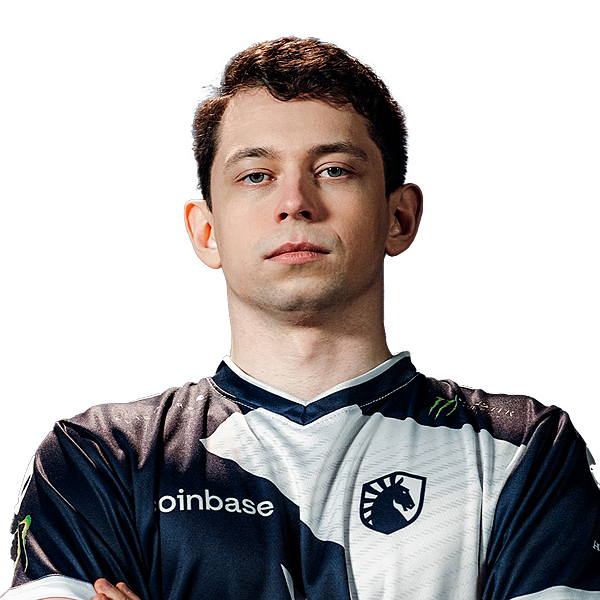

E-sport w grze Dota 2
Scena e-sportowa w Dota 2
Na scenie e-sportowej w Dota 2 możemy znaleźć wielu organizatorów turniejów zarówno tych mniejszych jak i tych większych. Turnieje te dzielą się na Tier'y tzn. poziomy.
Turnieje poziomu pierwszego będą bardziej prestiżowe niż te z poziomu 2 i tak dalej. Dlatego w trakcie roku każdy może znaleźć jakiś turniej który go interesuje.
Jednymi z głównych organizatorów turniejów pierwszego poziomu to:
ESL: Znani są z organizacji ciągnącej serii się turniejów ESL DreamLeague i jednorazowych eventach takich jak ESL One Birmingham 2024 czy ESL One Berlin 2023.
PGL: Są odpowiedzialni za organizację największego turnieju na całej scenie e-sportowej The International który znany jest z największej puli nagród kiedykolwiek w e-sporcie.
Organizują także sezonowy turniej PGL Wallachia
The International
The International (TI) to coroczny turniej organizowany przez Valve Corporation oraz PGL który przyciąga najlepsze drużyny z całego świata.
TI słynie z rekordowych pul nagród, które są współfinansowane przez społeczność graczy poprzez zakup przepustek bitewnych (Battle Passes). TI 2021 miało największą pule nagród wśród wszystkich wydarzeń e-sportowych na całym świecie któa wynosiła 40,018,400 miliona dolarów.
Zwycięstwo w The International to najwyższe osiągnięcie w świecie Dota 2.
Nadchodzące turnieje
Każdego roku, poza The International, odbywa się wiele innych turniejów Dota 2, zarówno online, jak i offline, na różnych kontynentach. Oto kilka nadchodzących wydarzeń:
- PGL Wallachia S2: Druga odsłona sezonowego turnieju od PGL. Będzie to turniej online a pula nagród wynosi 1 milion dolarów. Jest to turniej europejski to znaczy, że będą w nim mogły wystąpić drużyny tylko z tego regionu
- DreamLeague S24: Kolejna już odsłona turnieju organizowanego przez ESL. Turniej także będzie online a pula nagród wynosić będzie 1 milion dolarów. Również jest to turniej europejski.
- The International 2024: Największy turniej w roku tym razem odbędzie się w Kopenhadze gdzie najlepsi gracze z całego świata będą rywalizowały o Aegis of Champions.
Pula nagród nie jest jeszcze znana, ale patrząc na zeszłoroczne TI to można stwierdzić, że będzie ona wynosić około 3 milionów dolarów.
Profesjonalne drużyny i gracze

Michał "Nisha" Jankowski
W świecie Dota 2 istnieje wiele znanych drużyn i graczy, którzy zdobyli sławę dzięki swoim umiejętnościom i osiągnięciom. Do najbardziej znanych drużyn należą:
- Team Liquid: znana z wygrania The International 2017 oraz konsekwentnych wysokich wyników na scenie e-sportowej.
Warto dodać, że gra w niej jedyny Polak, który osiągnął taki poziom na scenie międzynarodowej, a nazywa się Michał "Nisha" Jankowski i gra na pozycji midlanera.
- OG: Drużyna, która wygrała The International dwukrotnie z rzędu jako pierwsi, co czyni ich legendami Dota 2.
- Team Spirit: Rosyjska drużyna której także udało się wygrać TI dwukrotnie dzięki młodemu zawodnikowi z Ukrainy Illya "Yatoro" Mulyarchuk.
Podsumowanie
E-sport w grze Dota 2 to dynamiczna i ekscytująca scena, która przyciąga najlepszych graczy z całego świata. Dzięki turniejom takim jak DreamLeague i The International, gracze i fani mogą cieszyć się najwyższym poziomem rywalizacji i spektakularnymi widowiskami. Jeśli jesteś fanem Dota 2 lub chcesz zgłębić świat e-sportu, nadchodzące turnieje i wydarzenia to doskonała okazja, aby dołączyć do tej pasjonującej społeczności.